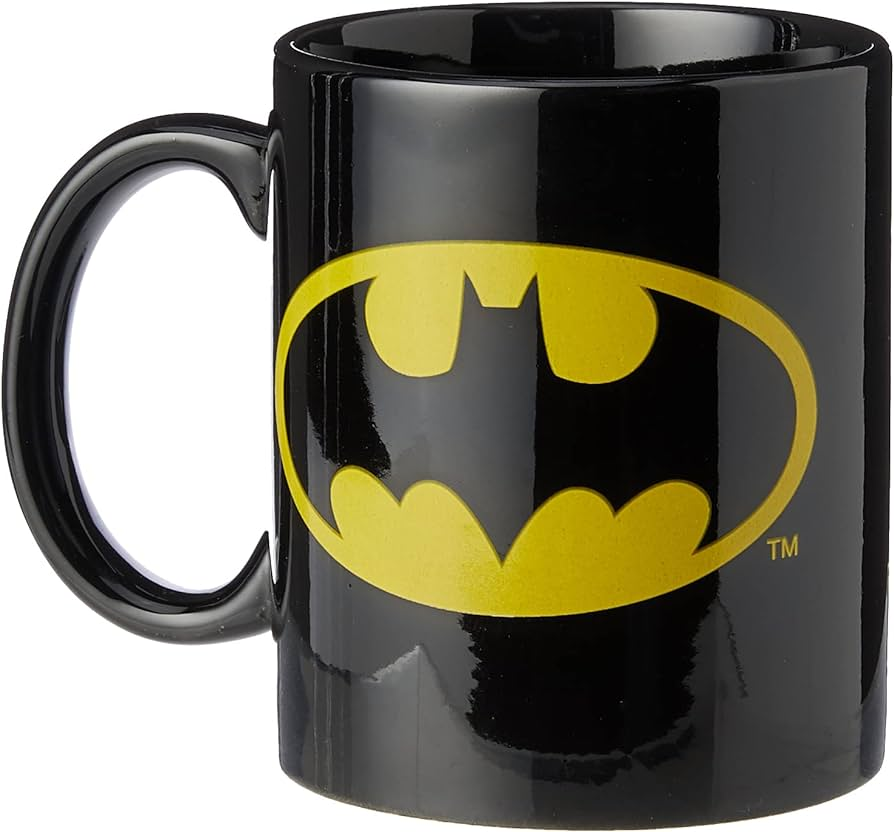

Coffee

Description
This is a recipe on how to make coffee when you first get to work
It may be worth noting that the exact steps may be highly specific to my workplace, however feel free to use this recipe as a guide for your coffee requirements
Ingredient
- ground up coffee beans
- filtered water
- drip coffee maker
- favourite coffee mug
Steps
- Add water to coffee maker and note how many cups of water was added
- Place coffee into coffee maker, adding one scoop (tablespoon) of ground coffee beans per cup of water, plus one extra scoop (for the pot)
- Switch the coffee maker on and wait for the coffee to be made
- While waiting for coffee, select your favourite batman mug
- Pour coffee into mug and enjoy